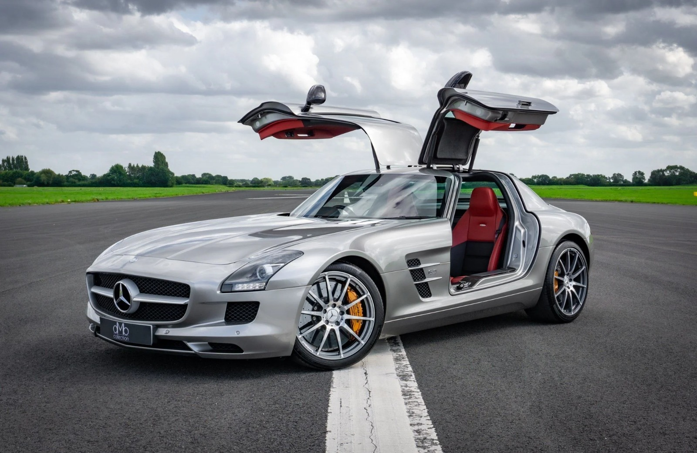
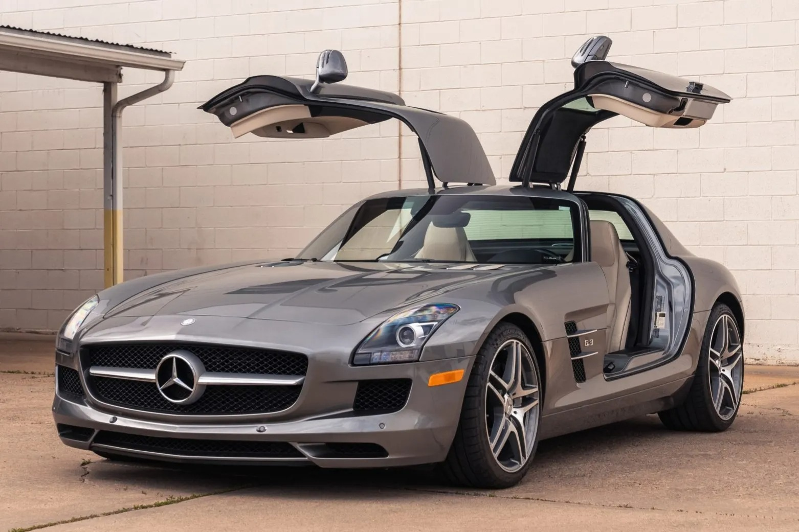
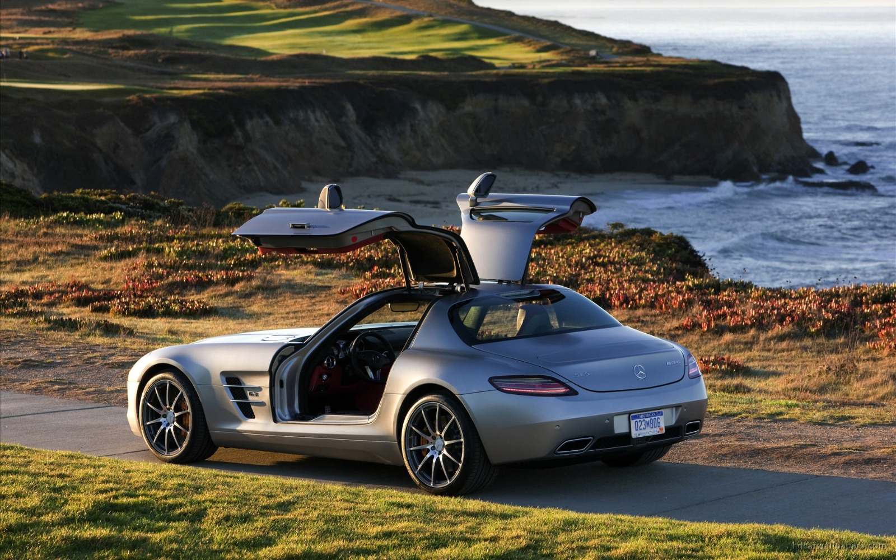
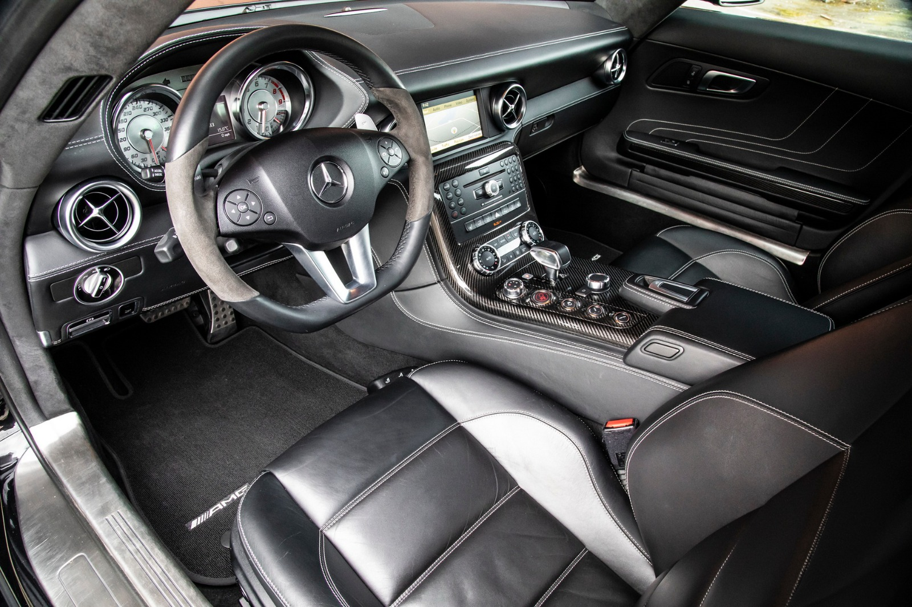
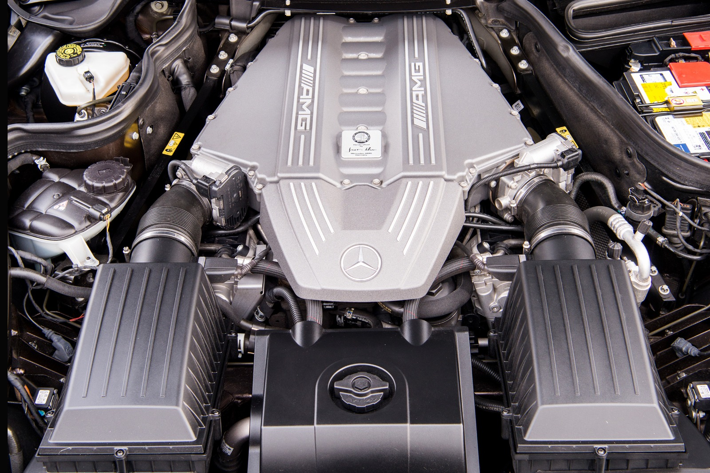

Mercedes-Benz SLS AMG
O supercarro de portas asa de gaivota que reviveu o espírito do lendário 300 SL.

Ficha Rápida
Motor
6.2 V8
Potência
571 cv
Torque
650 Nm
Câmbio
Automatizado de 7 marchas (dupla embreagem)
Tração
Traseira
0 a 100 km/h
3,8 s
Velocidade máxima
317 km/h
Dados do cupê, segundo a Mercedes-Benz. A velocidade máxima é limitada eletronicamente. O motor V8 (código M159) tem 6.208 cc, fica na frente do carro, recuado em direção ao centro, e rende a potência máxima a 6.800 rpm.
História
A marca
A Mercedes-Benz nasceu em 1926, quando a Benz & Cie. e a Daimler-Motoren-Gesellschaft se uniram e formaram a Daimler-Benz. Karl Benz patenteou o automóvel em 1886 e Gottlieb Daimler construiu o seu logo depois.
A AMG
A AMG foi criada em 1967 pelos engenheiros Hans Werner Aufrecht e Erhard Melcher. O nome vem das iniciais deles mais Großaspach, cidade natal de Aufrecht. A Mercedes assumiu o controle em 1999 e hoje a AMG é sua divisão de alto desempenho.
Como surgiu
A AMG recebeu sinal verde para o projeto em 2006. O SLS, sigla de Super Leicht Sport, foi apresentado no Salão de Frankfurt, em setembro de 2009.
Por que foi criado
Para trazer de volta as portas asa de gaivota do 300 SL de 1954, 55 anos depois, e para substituir o SLR McLaren com um projeto feito quase todo dentro da Mercedes.
2011: o Roadster
O conversível, com portas comuns e capota de lona, foi apresentado no Salão de Frankfurt de 2011.
2013 e 2014: versões finais
Vieram o Black Series, edição limitada de 631 cv, e o Electric Drive. A produção terminou em 2014 com a edição GT Final Edition.
5 Curiosidades
1. Primeiro 100% AMG
Foi o primeiro Mercedes desenvolvido do zero pela AMG.
2. Portas com explosivos
As dobradiças superiores têm pequenos detonadores. Se o carro capotar, as portas se soltam para os ocupantes saírem, segundo a Road & Track.
3. Motor feito à mão
O V8 era montado à mão em Affalterbach. A AMG o chamou de o motor aspirado de série mais potente do mundo.
4. Versão elétrica
O SLS Electric Drive tinha quatro motores elétricos, 740 cv e tração nas quatro rodas. Só 23 foram feitos.
5. Preço de lançamento
Na estreia, em 2010, o SLS AMG custava 177.000 euros na Europa.
O Que Torna o Carro Especial?
Portas asa de gaivota
Lembram o 300 SL de 1954, assim como a grade larga com a grande estrela da Mercedes.
V8 aspirado
571 cv, lubrificação por cárter seco e câmbio de dupla embreagem na traseira.
Estrutura de alumínio
Foi o primeiro Mercedes com chassi e carroceria de alumínio. O carro pesa 1.620 kg.
Raridade
Entre 2009 e 2014 foram feitos 8.114 cupês e mais 537 da versão GT, segundo o arquivo da Mercedes.
Competição
O mesmo V8 foi usado no carro de corrida SLS AMG GT3.
Galeria




Fontes
- Mercedes-Benz Group - 100 years of the Mercedes-Benz brand
- Mercedes-AMG - The History
- Wikipedia - Mercedes-AMG
- Mercedes-Benz Public Archive - 197 series SLS AMG Coupés, 2010 - 2014
- Wikipedia - Mercedes-Benz SLS AMG
- Wikipedia - Mercedes-Benz M156 engine
- Supercars.net - 2010 Mercedes-Benz SLS AMG
- Supercar Nostalgia - Guide: Mercedes-Benz C197 SLS AMG Gullwing & Roadster
- Supercar Nostalgia - Guide: Mercedes-Benz C197 SLS AMG Black Series
- Car Body Design - Mercedes-Benz SLS AMG
- SlashGear - This Misunderstood Mercedes Technology Was Actually Brilliant
- Romans International - Mercedes SLS AMG Buyers Guide